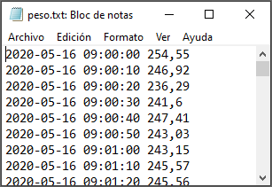

2 Obtener y preparar los datos
En este capítulo veremos cómo se obtienen los datos en el entorno industrial, y estudiaremos algunas recomendaciones para almacenarlos correctamente. Veremos también algunos términos que es necesario conocer.
2.1 Obtener datos industriales
En el entorno industrial, los datos son recogidos casi siempre por uno de estos tres caminos:
- Estudio retrospectivo, basado en datos históricos
- Estudio observacional
- Experimento diseñado
Un buen sistema de recogida de datos facilitará el estudio posterior. Cuando ponemos poco cuidado en la toma de datos y en la forma de guardarlos, nos encontraremos después con problemas complicados de resolver en la fase de análisis o en la de interpretación , y en algunos casos, estos problemas serán imposibles de resolver.
2.1.1 Estudios retrospectivos o históricos
Un estudio retrospectivo o histórico es el que utiliza una muestra o todos los datos históricos de un proceso, recogidos en el pasado durante un período determinado de tiempo. El objetivo de un estudio de este tipo puede ser la investigación sobre la relación entre algunas variables, o explorar la calidad de la información disponible, o construir un modelo que permita explicar el proceso tal como es actualmente, o saber si se ha desviado. Estos modelos del proceso se denominan modelos empíricos, porque están basados en los propios datos del proceso y no en una formulación teórica sobre el mismo.
Un estudio retrospectivo tiene la ventaja de tener a su disposición un gran número de datos que ya han sido recogidos, minimizando el esfuerzo de obtenerlos. Sin embargo, tiene varios problemas potenciales:
- Si no disponemos de detalles suficientes, es posible que no podamos determinar si las condiciones de variación de los valores obtenidos responden a las mismas causas que en la situación actual.
- Es posible que nos falte algún valor clave que no haya sido recogido o que lo haya sido de manera defectuosa
- Algunas veces, la fiabilidad y validez de los datos de proceso históricos son dudosas, o al menos, cuestionables.
- Los datos históricos no siempre se han recogido con la perspectiva actual del proceso, y es posible que no nos proporciones explicaciones adecuadas del proceso en su situación actual.
- A veces queremos utilizar los datos históricos de proceso para fines que no estaban previstos cuando se recogieron
- Las notas sobre los valores del proceso, incluyendo los valores anormales, pueden ser insuficientes o inexistentes, y no tenemos ninguna explicación sobre los posibles valores anómalos que detectamos en el análisis.
Usar datos históricos siempre tiene el riesgo de que, por la razón que sea, no se hayan recogido datos importantes, o que estos datos se hayan perdido, o se hayan transcrito de forma inadecuada o incorrecta. Es decir, los datos históricos pueden tener problemas de calidad de datos.
El hecho de que algunos datos se hayan recogido históricamente no siempre quiere decir que estos datos sean relevantes o útiles. Cuando el grado de conocimiento del proceso no es suficiente, o no se basa en un análisis metódico y riguroso de los datos, es posible que no se hayan recogido algunos datos que pueden ser importantes para el proceso, a veces simplemente porque son complejos o difíciles de analizar. Los datos históricos no pueden proporcionar la información que buscamos si la información de las variables clave nunca se ha recogido o se ha hecho sin una buena base experimental.
El propósito del análisis de los datos industriales es aislar las causas que están detrás de los sucesos que afectan e influyen en los procesos. En los datos históricos, estos sucesos pueden haber ocurrido semanas, meses o incluso años antes, sin que haya registros ni notas que hayan intentado explicar estas causas, y los recuerdos de las personas que han participado en ellos se pierden con el tiempo, o se alteran involuntariamente, proporcionando explicaciones supuestamente válidas pero que en realidad son incorrectas. Por eso, con frecuencia, el análisis de los datos históricos puede poner de manifiesto hechos interesantes, pero sus causas quedan sin explicar.
Los estudios históricos pueden requerir una fase previa de preparación y depuración de datos que puede llegar a ser muy larga y tediosa. Se estima que en muchos estudios de ciencia de datos, el tiempo de preparación de los datos puede llegar al \(60\%\) del tiempo total empleado en el estudio. Las herramientas de análisis de datos son de gran ayuda en esta fase del proceso, aunque en muchas ocasiones será necesario un trabajo manual de recolección de datos en papel, hojas de cálculo diversas y otras fuentes. Esta fase es muy útil no sólo para la preparación de datos para el estudio, sino para mejorar el conocimiento de los datos, cómo se originan y cómo se almacenan. Este conocimiento siempre es de gran utilidad para mejorar los procedimientos actuales de captura de datos, facilitando la fiabilidad de los análisis futuros.
2.1.2 Estudios observacionales
Como su nombre indica, un estudio observacional simplemente observa un proceso durante un tiempo de operación en rutina. Normalmente, el ingeniero o técnico interfiere lo mínimo posible en el proceso, sólo lo suficiente para recoger la información que necesita, que en muchas ocasiones no forma parte de los controles de rutina, si piensa que esa información puede ser relevante. Si se planifican adecuadamente, los estudios observacionales proporcionan datos fiables, precisos y completos para documentar un proceso. Por otra parte, estos estudios proporcionan una información limitada sobre las relaciones entre las variables del proceso, porque es posible que durante el tiempo limitado de observación, el rango de variación de las variables no recoja todas las situaciones posibles, incluyendo situaciones extraordinarias.
2.1.3 Experimentos diseñados
La tercera forma de recoger información de un proceso son los experimentos diseñados. En un experimento de este tipo, el ingeniero o técnico hace un cambio deliberado en las variables que controla (llamadas factores), observa el resultado, y toma una decisión respecto a qué variable o variables son responsables de los cambios que observa en el proceso.
Una diferencia importante respecto a los estudios históricos y los observacionales es que las diferentes combinaciones de factores se aplican al azar sobre un conjunto de unidades experimentales. Esto permite establecer con precisión las relaciones causa-efecto, cosa que no suele ser posible en los estudios históricos ni en los observacionales.
En el capítulo 7 se hará una introducción básica al **diseño de experimentos**
2.2 Ejemplos de variables
2.3 Algunos términos importantes
En la mayoría de las ocasiones, nuestros datos provienen de una muestra obtenida de una población,
Una población es un conjunto de de personas, cosas o, en general, objetos en estudio. A veces, una población es demasiado grande para que podamos abarcarla completa; para poder estudiarla, obtenemos una muestra.
En muchas ocasiones, cuando se recogen los datos como resultado de una experimentación, definimos la población como todos los resultados que podríamos haber obtenido. Llamamos a este conjunto de posibles resultados una población conceptual. Por ejemplo, cuando medimos el \(pH\) de varias muestra de leche, la población es el conjunto de todos los resultados posibles que podríamos haber tenido. Muchos problemas de ingeniería y tecnología se refieren a poblaciones conceptuales.
Una muestra es un subconjunto de una población que hemos seleccionado para su estudio. El proceso de obtener una muestra se llama muestreo. Cuando tomamos una muestra, debemos estar seguros de que contiene las propiedades que queremos estudiar en la población. En ese caso, nuestra muestra es una muestra representativa: los individuos de la muestra son representativos de la población. Para que la muestra sea representativa, debe ser obtenida mediante un muestreo aleatorio. Una muestra aleatoria simple de tamaño \(n\) consiste en \(n\) individuos de una población, elegidos de forma que cada conjunto posible de \(n\) individuos tiene la misma probabilidad de ser elegido
Introduciremos el concepto de probabilidad con detalle en el capítulo 4
Llamamos estadístico a un número que representa una propiedad o característica de la muestra. Un parámetro es una característica de la población, que podemos estimar a partir de la muestra mediante la obtención de un estadístico muestral.
A los objetos descritos en un conjunto de datos los llamamos individuos. A veces, estos individuos pueden corresponder a personas. Cuando los objetos que estudiamos no son personas, como es lo habitual en el entorno industrial, los llamamos casos.
Un atributo es una característica que define una propiedad de un objeto, persona o cosa. Por ejemplo, edad, peso, altura, sexo, color de ojos, son atributos de una persona. Llamamos variable a una característica cualquiera de un individuo que puede ser medida. Una variable puede tomar diferentes valores en diferentes individuos.
Según estas definiciones que acabamos de ver, una muestra está formada por un conjunto de casos, y cada caso contiene un determinado número de variables, que contienen los valores que hemos analizado o medido.
La población es el total de quesos en la cámara
2.3.1 Tipos de variables
Algunas variables, como el color, sirven para clasificar los individuos en categorías. Otras, como la altura o el peso de un individuo, pueden tomar valores numéricos con los que podemos hacer cálculos. Por ejemplo, podemos sumar la altura de varias personas, pero no tiene sentido sumar los colores del arco-iris (aunque sí podemos contarlos, y hacer cálculos con estos recuentos). También podemos categorizar variables continuas: podemos clasificar nuestro grupo de personas en altas o bajas, y podemos contar cuántas personas entran en cada categoría.
| Variables cualitativas o categóricas |
Variables cuantitativas o métricas |
||
|---|---|---|---|
| Nominales | Ordinales | Discretas | Continuas |
| Valores en categorías arbitrarias | Valores en categorías ordenadas | Valores enteros en escala numérica | Valores continuos en escala numérica |
| (sin unidades) | (sin unidades) | Unidades contadas | Unidades medidas |
Una variable categórica coloca a un individuo en uno o más grupos o categorías
Una variable métrica toma valores numéricos con los que tiene sentido realizar cálculos aritméticos como sumar, restar, etc.
Las variables categóricas se conocen también como variables cualitativas porque indican cualidades.
Las variables métricas se conocen también como variables cuantitativas porque indican cantidades.
A veces se utiliza la palabra cualitativo de forma incorrecta para indicar calidad, por ejemplo cuando alguien dice: “Este envase es muy cualitativo”. Deberíamos decir “Este envase tiene gran calidad”. Cualitativo no se deriva de calidad, sino de cualidad.
2.4 Almacenar datos en una hoja de cálculo
Las hojas de cálculo son muy útiles para recoger la información de un conjunto de observaciones. De la misma manera que la gramática permite ordenar y estructurar un escrito de acuerdo a reglas comunes, veremos que hay reglas para que el almacenamiento de los datos sea lo más homogéneo posible y se reduzcan los errores al mínimo.
En este libro trataremos exclusivamente de lo que llamaremos datos rectangulares: grupos de valores que están asociados a una o más variables, y a varias observaciones. Hay muchos más datos que no se ajustan a este paradigma: imágenes, sonidos, archivos documentales de texto. Pero la forma más común de almacenar datos industriales es la de las tablas rectangulares; vamos a aprender cómo organizarlas correctamente.
Según hemos visto, existen diferentes tipos de variables, cualitativas (categóricas) y cuantitativas (métricas). Normalmente, los valores de las variables categóricas se describen mediante textos del tipo “color blanco”, “hombre”, “mujer”, “alto”, “bajo”, etc. Suelen corresponder con características descriptivas, y por lo tanto, no puede hacerse cálculos directamente con ellos, a menos que se hayan resumido, por ejemplo, mediante un conteo. Las variables métricas consisten en valores numéricos, que pueden ser enteros (\(1\);\(24\);\(350\)) o continuos (\(1,456\);\(0,35\)) y que sí pueden utilizarse directamente para hacer cálculos tales como sumas, etc.
2.4.1 Los nombres de las variables
Una variable está descrita siempre por un nombre, que designa la variable, y un valor o conjunto de valores, que corresponden a los casos. Este conjunto de valores, como acabamos de ver, pueden ser textos o números.
Ejemplos de valores de texto: “Carlos”, “fruta”, “Lluvia fuerte”, “muy ácido”, “sabor a fresa”
Ejemplos de valores numéricos: \(1\); \(7\); \(10,65\)
Siempre que sea posible, utilizaremos el nombre del atributo o característica que estamos midiendo o analizando, o su abreviatura, para designar una variable; por ejemplo, si estamos recogiendo la altura de una serie de personas, llamaremos altura a la variable; si estamos recogiendo el peso, usaremos el nombre peso, etc.
En una hoja de cálculo, colocaremos el nombre de la variable en la primera fila, e iremos añadiendo los valores debajo, un valor por línea.
A veces, asignar un nombre a una variable no es todo lo fácil que podría parecer a simple vista. Por ejemplo, ¿qué nombre daríamos a una variable que va a recoger los valores de \(pH\) de la leche en una cuba de queso en el momento de añadir el cuajo? Está claro que \(pH\) no es suficiente, porque en el proceso hay varias medidas de \(pH\) y sería bueno que pudiésemos diferenciarlas con facilidad. En un caso como éste, es probable que necesitemos utilizar varias palabras o abreviaturas que describan mejor el nombre de la variable.

Para la construcción correcta de estos nombres, se han establecido un conjunto de normas, con el objetivo de evitar errores y facilitar el intercambio de los datos entre diferentes programas de análisis.
2.4.2 Reglas para los nombres de las variables
Las hojas de cálculo admiten que introduzcamos cualquier texto en una celda; no hay prácticamente ninguna limitación a los nombres que podemos usar para nuestras variables. Excel utilizará los nombres con cualquier carácter sin inconvenientes.
Sin embargo, otros programas informáticos, entre ellos R, son mucho más restrictivos. Por esta razón, estableceremos una serie de reglas para construir los nombres de variables, que aplicaremos a nuestras tablas de Excel, y que nos permitirán intercambiarlas con otros programas, como R, con toda seguridad.
- Un nombre válido consiste en una combinación de letras, números y signo de subrayado (\(\_\))
- Un nombre de variable no puede empezar por un número, un punto o un signo de subrayado (\(\_\)); debe empezar siempre por una letra.
- Los nombres de variables irán siempre en minúsculas. Según esta regla, \(Peso\) no es un nombre válido, pero \(peso\) si lo es.
No utilizaremos espacios en blanco, acentos ni caracteres especiales como \(\tilde{n}\), \(\%\), guiones o paréntesis.
Hay veces en que nos interesa unir varias palabras para construir un nombre de variable. Se utilizan diferentes formas de unir palabras, por ejemplo:
un punto, como en \(peso.en.cm\),
lo que se ha llamado escritura de camello (camelCase), que se llama así por el uso de mayúsculas y minúsculas mezcladas (\(PesoEnCm\))
el signo de subrayado \(\_\), como en \(peso\_en\_cm\)
Algunas de estas opciones son utilizadas en distintas comunidades de usuarios, por ejemplo la opción 1 es utilizada en la guía de estilo de Google, y la opción 2 es muy utilizada por los programadores del entorno de los lenguajes de Microsoft. Nosotros utilizaremos el signo de subrayado (\(\_\)), que es la forma más usada en el entorno de programación de R.
Siempre se separarán las palabras mediante el signo de subrayado (_) para facilitar la lectura. Así, aunque \(temperatura1\) es un nombre válido, preferiremos \(temp\_1\); es más corto y de lectura más clara. Igualmente, preferiremos \(peso\_empaquetado\) a \(pesoempaquetado\)
Mantendremos los nombres razonablemente cortos para facilitar la lectura. Aunque podemos hacer los nombres todo lo largos que queramos, es más cómodo utilizar nombres cortos. Por ejemplo, podríamos utilizar \(temperatura\_de\_la\_leche\_al\_cuajar\), pero preferiremos abreviarlo como \(temp\_cuajo\).
Nombres no válidos:
- \(peso\ en\ gramos\) (contiene espacios)
- \(pH\_de\_la\_leche\_en\_Recepci\acute{o}n\) (demasiado largo, tiene un acento, tiene mayúsculas)
- \(extracto\_seco\_total\_a\_la\_salida\_de\_la\_salmuera\) (demasiado largo)
Alternativas válidas:
- \(peso\_g\)
- \(pH\_leche\_rec\) (en este caso, de manera excepcional, podemos mantener el uso de la mayúscula por corrección formal)
- \(est\_salida\_sal\)
Un caso particular es el uso de la \(\tilde{n}\), ya que no hay una alternativa fácil para el uso en las fechas (\(a\tilde{n}o\)). R admite el uso de la \(\tilde{n}\) en los nombres de variables, por lo que podremos usarlo con cuidado, poniendo atención a los posibles errores que se pudiesen producir en algunas librerías.
2.4.3 Preparación de los datos
Los datos se pueden recoger y guardar de múltiples formas. Cuando nos incorporamos a un equipo de trabajo existente, lo más seguro es que el equipo disponga ya de un sistema de archivo de los datos, de acuerdo con sus prácticas habituales.
Cuando la recogida de datos se hace de forma manual en papel, es necesario registrar en el ordenador los datos recogidos. Lo más frecuente es que este registro se haga en hojas de cálculo, como Microsoft Excel o Google Sheets. En algunos casos, el almacenamiento se hace sobre bases de datos, genéricas o desarrolladas a medida.
Actualmente, la tendencia es recoger los datos o bien de forma automática, o bien de forma manual sobre sistemas informatizados (pantallas), lo que permite eliminar el papel y disponer directamente de los datos en un formato digitalizado.
Los equipos y líneas de producción diseñados actualmente (IoT) se interconectan con los sistemas de información y almacenan en tiempo real todos los datos necesarios, lo que libera al operario de la pesada tarea de reintroducirlos manualmente, a la vez que reduce los errores debidos a la imputación incorrecta.
En todos los casos, es imprescindible asegurar que los sistemas de información pueden exportar a ficheros de texto tipo fichero plano o tipo CSV, de forma que podamos importarlos tanto a Excel como a R, como veremos más adelante. Estos sistemas de exportación de datos deben diseñarse de forma flexible y abierta, para que tanto la captura como la exportación puedan modificarse y adaptar la recogida de la información a las necesidades de cada momento.
2.4.4 Diseño de la captura de información
A veces el diseño de la captura de datos sigue aproximadamente el modelo manual en papel. Se introducen los datos en la hoja de cálculo y una vez completados, se imprime el documento para su archivo.
El error más común que cometemos es tratar la hoja de cálculo como un bloc de notas, es decir, hacer anotaciones de forma libre, colocar los datos y el resultado de los análisis al lado y en cualquier parte de la hoja, y apoyarnos en el contexto para interpretar lo que hemos guardado. Pero para que el ordenador sea capaz de analizar nuestros datos de manera eficiente, debemos estructurarlos de tal forma que el programa use la información tal como nosotros queremos.
Es común utilizar una hoja para guardar múltiples tablas de datos, tal como vemos en la Figura 2.1. Esta estructura, sin embargo, resulta enormemente confusa para su análisis, o lo imposibilita completamente.

En otros casos, los datos se guardan en hojas de cálculo que se componen de diferentes pestañas para cada semana, cada mes o cada año, como vemos en la Figura 2.2. Sin embargo, esta forma de almacenar los datos tampoco es la óptima para su análisis.

¿Y utilizar diferentes pestañas para cada tabla? En este caso, la respuesta es sí y no. Si las diferentes tablas presentan situaciones diferentes, o datos que no son coincidentes, podemos utilizar diferentes pestañas. Pero si los datos están vinculados, por ejemplo, se corresponden con medidas hechas en fechas diferentes (meses, años), la respuesta adecuada es que las pestañas no son la forma correcta de almacenarlos datos; la forma recomendad es añadir una variable que nos permita diferenciar los datos por fecha; nuestro programa de análisis nos permitirá filtrar los datos según la fecha que deseemos, y todos estarán en una única tabla, facilitando la coherencia del conjunto.
Hay muchas formas de almacenar la información en una hoja de cálculo, pero hay una forma que facilita la utilización de los datos tanto por la hoja de cálculo como por otros programas de análisis, A esta forma de almacenar las tablas de datos la llamamos datos ordenados (tidy data)(Wickham 2014)
2.4.5 Los datos ordenados (tidy data)

Las reglas principales al almacenar nuestros datos en una hoja de cálculo es que columnas=variables, filas=observaciones, celdas=valores. Estas tres reglas básicas son las que hacen que nuestro conjunto de datos sea ordenado (Hadley Wickham 2017):
- Cada variable debe tener su propia columna.
- Cada observación debe tener su propia fila.
- Cada valor debe tener su propia celda o casilla .
La Figura 2.3 muestra estas reglas de forma visual.

Estas tres reglas están interrelacionadas porque es imposible satisfacer sólo dos de tres.
2.4.6 Datos rectangulares en Excel
La estructura de datos ordenados nos lleva a almacenar nuestros datos en tablas con estructura rectangular. La mejor forma de manejar los datos en Excel es convertir esta estructura en una tabla, para ello utilizaremos la opción Menú> Insertar>Tabla

Aunque en Excel no es fácil modificar esta estructura, R proporciona herramientas muy útiles que permiten intercambiar filas o columnas, lo que en ocasiones es muy útil en el análisis. Hadley Wickham (2017) proporciona métodos detallados para manejar tablas de datos ordenados.
2.4.7 Qué es un fichero plano y un fichero CSV
LLamamos fichero plano a un fichero de datos de texto sin ningún tipo de formato, donde los datos están separados por espacios o tabulaciones. Muchos equipos automáticos, como balanzas de laboratorio o básculas de proceso, producen ficheros planos de texto, que se pueden importar a Excel o R. Un fichero CSV es un fichero plano en el que los valores están separados por un carácter especial, llamado separador. Este separador puede ser una coma , (cuando los decimales se separan mediante un punto, como en EEUU) o un punto y coma ; (cuando los decimales se separan mediante una coma, como en España)



En un fichero plano o en un fichero CSV, la primera fila puede contener los nombres de las columnas. En algunos casos, los elementos de texto pueden estar entre comillas. En estos casos, los programas de importación se ocupan de la conversión de formatos.
La importación de un fichero CSV en Excel en español es directa si se ha generado con puntos y comas como separador y comas para los decimales; si no es así, nos aparecerá como un fichero plano de texto sin formato, y tendremos que realizar una conversión.
2.4.8 De Excel a R: cóo se genera un fichero CSV desde EXcel.
Una vez que tenemos nuestros datos en Excel, hay dos formas en las que podemos poner los datos a disposición de R para su análisis: exportarlos a un archivo de texto con formato CSV, o leer directamente los datos de Excel desde R utilizando las funciones de la librería tidyverse. En ambos casos, el resultado en R es un dataframe o cuadro de datos, que es una estructura equivalente a la de nuestra tabla de datos en Excel.
En la pestaña de la base de datos, nada más. Análisis en otras hojas